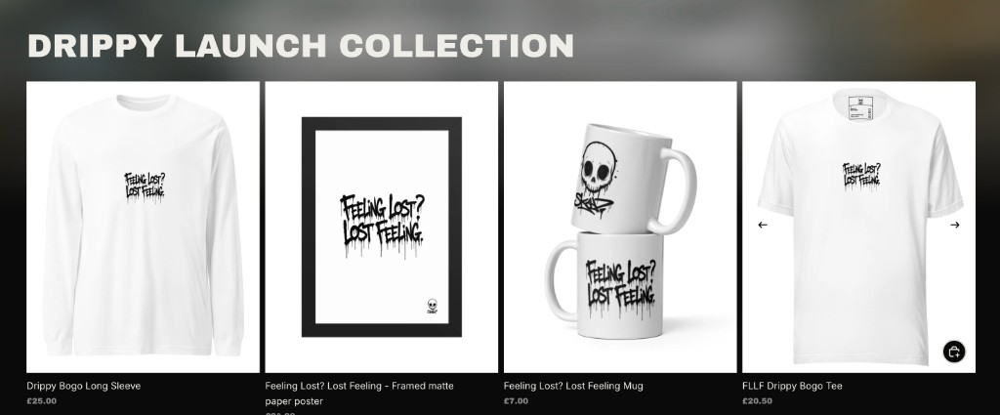

Gator Mats
An online store for premium desk pads and custom mouse mats. The brief was a clear path to buy: browse the catalogue, customise a design, then get to cart and checkout.
View projectSales & Digital Growth
Sales, e-commerce, websites & digital marketing.
I’m building my career around sales and business growth, with hands-on experience in e-commerce, websites, email marketing and digital content. I like seeing how the parts of a business connect — from finding a customer to converting and keeping them.

Selected work
Stores, product tools and campaign work — briefs that needed a commercial answer, then the digital work to make them usable.
An online store for premium desk pads and custom mouse mats. The brief was a clear path to buy: browse the catalogue, customise a design, then get to cart and checkout.
View project
A Shopify product configurator so customers can pick a model, set it up the way they want, and continue to checkout — instead of guessing from a static product page.

A website for a pre-launch streetwear brand. The brief was a store ready for the first drop: the collection listed, then sales funnels set up so visitors could move from the launch page to checkout.


Photography, film and colour grading for an emerging surf brand. The need was one consistent look across paid ads, social and the site — shot on the coast, then graded so stills and video sit together.
I handled the stills, the moving image and the post, so it felt like one campaign rather than leftover clips stitched together.
What I bring
A mix of commercial thinking and practical digital work — useful in a startup or growing company, not only in one narrow job title.
The direction I’m building into: prospecting, customer conversations and understanding the path from first contact to a long-term customer.
Business development · Prospecting · Lead generation · Customer communication · Copywriting · Commercial thinking · Customer journeys
How businesses attract, convert and keep customers — stores, emails and pages that have a job to do.
Shopify · E-commerce · Klaviyo · Email marketing · Email flows · Customer retention · Landing pages · Conversion-focused thinking
Hands-on making: sites, content and the small problems that sit around them — evidence I can learn a tool and finish the work.
Websites · Front-end · UI · Basic graphic design · Content · Photography · Video · Product customisation · Digital problem solving
About
I’m from the UK. I like understanding more than one part of a company, rather than specialising in a single technical lane. Earlier in my career I spent two years in film production at Warner Bros, which is where a professional work ethic and a systematic way of getting through the day’s work really took shape.
From there I moved into e-commerce, websites, marketing and digital work — Klaviyo, content, and the tools around them — plus client and project work where the job is to listen, figure out what is needed, and get it done.
That mix is what I’m taking into sales and business development: enough commercial sense to care about the customer, and enough hands-on digital experience to understand the product and the systems behind it.
Next
Working across websites, e-commerce and marketing has given me a practical sense of how digital businesses operate — how customers are found, converted and kept. That’s why I’m looking for remote roles in sales, business development and growth, particularly in SaaS, AI, e-commerce and other digital companies. I’m also open to broader digital and e-commerce roles where that same mix is useful.
Contact
Let’s talk.